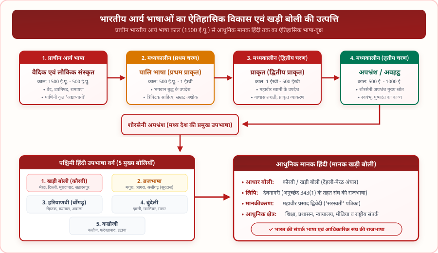
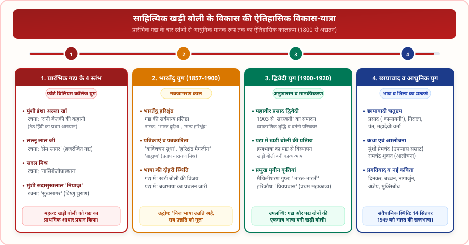
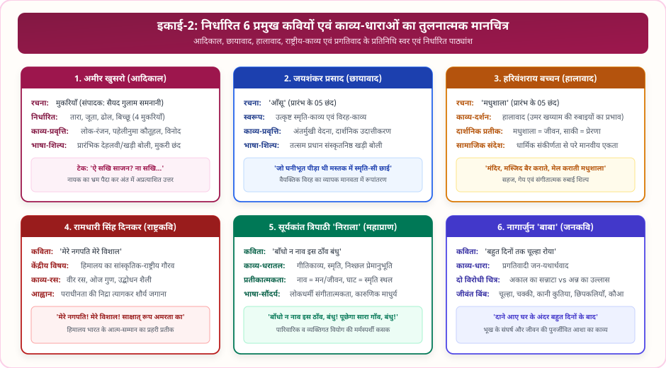
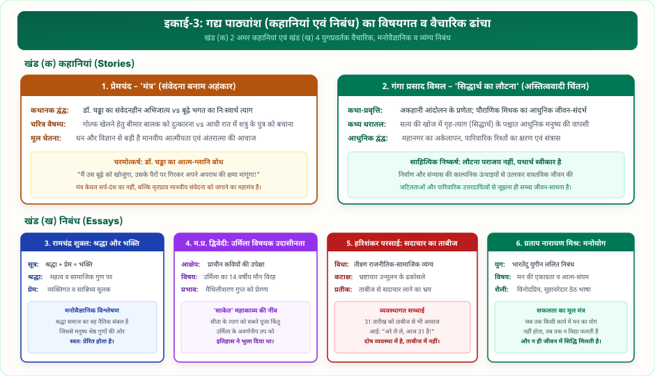

भाषा की परिभाषा, अर्थ, विभिन्न क्षेत्र एवं खड़ी बोली के साहित्यिक रूप का ऐतिहासिक विकास
अध्याय 1
भाषा की परिभाषा : अर्थ एवं विभिन्न क्षेत्र
भूमिका: मनुष्य एक सामाजिक प्राणी है और उसके सामाजिक जीवन का मूल आधार भाषा है। भावों, विचारों, अनुभूतियों और ज्ञान के आदान-प्रदान का सबसे समर्थ, सूक्ष्म और प्रामाणिक माध्यम भाषा है। प्रस्तुत अध्याय में हम भाषा की व्युत्पत्ति, प्रमुख भारतीय व पाश्चात्य विद्वानों की परिभाषाएं, भाषा की विशेषताएं, तथा इसके विभिन्न रूपों (बोली, विभाषा, मानक भाषा, राष्ट्रभाषा व राजभाषा) का वैज्ञानिक अध्ययन करेंगे।
1.1 भाषा का अर्थ एवं व्युत्पत्ति (Meaning and Etymology)
'भाषा' शब्द की व्युत्पत्ति संस्कृत की 'भाष्' धातु से हुई है, जिसका शाब्दिक अर्थ है — 'बोलना', 'कहना' अथवा 'वाणी व्यक्त करना'। अर्थात् मनुष्य के वागिंद्रियों (स्वर-यंत्रों) से उच्चरित होने वाली वह सार्थक ध्वनियां जिसके माध्यम से वह अपने मन के भावों और विचारों को दूसरों तक पहुंचाता है, भाषा कहलाती है।
संस्कृत आचार्यों का कथन: पतंजलि के अनुसार
"व्यक्ता वाचि वर्णा येषां त इमे व्यक्तवाचः।" अर्थात् जो वाणी वर्णों में व्यक्त होती है, उसे ही भाषा कहा जाता है। केवल अव्यक्त ध्वनि (जैसे पशु-पक्षियों की आवाज) भाषा नहीं कहलाती।
1.2 भाषा की प्रमुख परिभाषाएं (Definitions by Scholars)
1. डॉ. भोलानाथ तिवारी के अनुसार (सर्वाधिक प्रामाणिक परिभाषा)
"भाषा उच्चारण अवयवों से उच्चरित यादृच्छिक (यादृच्छिक = Arbitrary / मानी हुई) ध्वनि-प्रतीकों की वह सुगठित व्यवस्था है, जिसके द्वारा समाज के लोग आपस में विचारों का आदान-प्रदान करते हैं।"
2. डॉ. बाबूराम सक्सेना के अनुसार
"जिन ध्वनि-चिह्नों द्वारा मनुष्य परस्पर विचार-विनिमय करता है, उनको समष्टि रूप से भाषा कहते हैं।"
3. हेनरी स्वीट (Henry Sweet) के अनुसार
"ध्वन्यात्मक शब्दों द्वारा विचारों को प्रकट करना ही भाषा है (Language may be defined as the expression of thought by means of speech-sounds)."
1.3 भाषा की प्रमुख विशेषताएं एवं प्रकृति (Characteristics of Language)
1. भाषा सामाजिक संपत्ति है: भाषा किसी व्यक्ति विशेष की पैतृक संपत्ति नहीं है; यह पूरे समाज की साझी धरोहर है। मनुष्य इसे समाज में रहकर ही सीखता है।
2. भाषा अर्जित संपत्ति है: कोई भी बच्चा जन्म से भाषा लेकर पैदा नहीं होता, बल्कि अपने परिवेश और समाज से उसका अर्जन करता है।
3. भाषा परिवर्तनशील है: भाषा एक बहते नीर (नदी) के समान है — "कोस-कोस पर बदले पानी, चार कोस पर बानी।" समय और भूगोल के साथ इसका रूप बदलता रहता है।
4. भाषा यादृच्छिक (Arbitrary) प्रतीकों की व्यवस्था है: किसी वस्तु और उसके नाम में कोई स्वाभाविक या जन्मजात संबंध नहीं होता। उदाहरणार्थ, जिसे हिंदी में 'जल' या 'पानी' कहते हैं, उसे अंग्रेजी में 'Water' और अरबी में 'आब' कहा जाता है। यह समाज द्वारा स्वीकारा गया प्रतीक मात्र है।
5. भाषा का कोई अंतिम रूप नहीं होता: जीवित भाषाएं निरंतर नए शब्दों और भावों को समाहित करती हैं।
6. भाषा कठिनता से सरलता की ओर अग्रसर होती है: उच्चारण की सुविधा और संप्रेषणीयता के कारण भाषा का ऐतिहासिक प्रवाह जटिलता से सहजता की ओर होता है।
1.4 भाषा के विभिन्न रूप एवं क्षेत्र (Varieties and Functional Fields)
प्रयोजन और भौगोलिक क्षेत्र के आधार पर भाषा के निम्नलिखित प्रमुख स्तर होते हैं:
भाषा का रूप
भौगोलिक व सामाजिक क्षेत्र
प्रमुख लक्षण एवं कार्य
1. बोली (Dialect)
सीमित स्थानीय क्षेत्र (जैसे भोजपुरी, अवधी, गढ़वाली, कुमाऊँनी)।
घरेलू एवं बोलचाल का माध्यम; इसमें व्याकरणिक कठोरता नहीं होती तथा लिखित साहित्य अपेक्षाकृत सीमित होता है।
2. विभाषा / उपभाषा (Sub-Language)
विस्तृत अंचल (जैसे ब्रजभाषा, अवधी का मध्यकाल में रूप)।
जब किसी बोली में प्रचुर उत्कृष्ट साहित्य रचा जाने लगता है, तो वह विभाषा बन जाती है (उदा. सूरदास की ब्रजभाषा व तुलसीदास की अवधी)।
3. मानक भाषा (Standard Language)
सर्वमान्य राष्ट्रीय एवं शैक्षणिक क्षेत्र।
व्याकरण-सम्मत, परिष्कृत, एकरूपता युक्त भाषा जो शिक्षा, प्रशासन, समाचार-पत्रों और उच्च साहित्य में प्रयुक्त होती है। आज की मानक हिंदी खड़ी बोली पर आधारित है।
4. राजभाषा (Official Language)
सरकारी कामकाज, संविधान, संसद व न्यायालय।
भारतीय संविधान के अनुच्छेद 343(1) के अनुसार: "संघ की राजभाषा हिंदी और लिपि देवनागरी होगी।"
5. राष्ट्रभाषा (National Language)
संपूर्ण राष्ट्र का सांस्कृतिक व जन-मानस।
किसी देश के बहुसंख्यक नागरिकों द्वारा बोली जाने वाली और सांस्कृतिक एकता का प्रतिनिधित्व करने वाली भाषा।
6. संपर्क भाषा (Lingua Franca)
विभिन्न भाषा-भाषियों के बीच सेतु।
अलग-अलग मातृभाषा बोलने वाले लोग जब परस्पर संवाद करते हैं (भारत में हिंदी देशव्यापी संपर्क भाषा का कार्य करती है)।

चित्र 1.1: प्राचीन भारतीय आर्य भाषाओं (संस्कृत, पालि, प्राकृत, अपभ्रंश) से आधुनिक मानक हिंदी तक का ऐतिहासिक भाषा-वृक्ष
अध्याय 2
खड़ी बोली के साहित्यिक रूप का विकास
भूमिका: आज हम जिस हिंदी में समाचार पत्र पढ़ते हैं, विश्वविद्यालय में शिक्षण प्राप्त करते हैं और संसद में भाषण सुनते हैं, वह वस्तुतः 'खड़ी बोली' (कौरवी) का परिष्कृत एवं मानक रूप है। मध्यकाल में जहाँ काव्य-साहित्य की मुख्य भाषा ब्रजभाषा और अवधी थी, वहीं 19वीं शताब्दी के प्रारंभ से खड़ी बोली गद्य और पद्य दोनों की एकमात्र अधिष्ठात्री भाषा बनकर उभरी। इस अध्याय में हम खड़ी बोली के उद्भव, फोर्ट विलियम कॉलेज के चार प्रारंभिक स्तंभों, भारतेंदु युग, तथा आचार्य महावीर प्रसाद द्विवेदी के ऐतिहासिक योगदान का क्रमबद्ध अध्ययन करेंगे।
2.1 खड़ी बोली का नामकरण एवं उद्भव
'खड़ी बोली' पश्चिमी हिंदी उपभाषा वर्ग की प्रमुख बोली है, जिसका मूल भौगोलिक क्षेत्र दिल्ली, मेरठ, सहारनपुर, बिजनौर, मुरादाबाद और मुजफ्फरनगर के आसपास का भूभाग है। ग्रियर्सन एवं राहुल सांकृत्यायन ने इसे 'कौरवी' (कुरु जनपद की बोली) नाम दिया। 'खड़ी' शब्द के अर्थ:
खरापन / शुद्धता: खरी (विशुद्ध) और टकसाली होने के कारण इसे 'खड़ी बोली' कहा गया।
खड़ा स्वर: इसमें अकारांत शब्दों (जैसे- आया, गया, बैठा) का प्राचुर्य है, जबकि ब्रजभाषा में ओकारांत (आयो, गयो, बैठो) का प्रयोग होता है।
मानक स्वरूप: सीधी, सुस्पष्ट और सुदृढ़ होने के कारण यह खड़ी बोली कहलाई।
2.2 प्रारंभिक गद्य के चार प्रमुख स्तंभ (1800 ई. के आसपास)
आधुनिक खड़ी बोली गद्य के प्रवर्तन में 1800 ईस्वी में स्थापित फोर्ट विलियम कॉलेज (कोलकाता) और उसके समकालीन चार विद्वानों का योगदान अविस्मरणीय है:
विद्वान / लेखक
प्रमुख कृति
गद्य-शैली की प्रमुख विशेषताएँ
1. मुंशी इंशा अल्ला खाँ
रानी केतकी की कहानी (उदयभान चरित)
इन्होंने अरबी-फारसी और संस्कृत के कठिन शब्दों से बचकर विशुद्ध 'ठेठ हिंदुस्तानी' मुहावरेदार भाषा लिखी।
2. लल्लू लाल जी
प्रेम सागर (श्रीमद्भागवत के दशम स्कंध पर आधारित)
फोर्ट विलियम कॉलेज के भाषा मुंशी; इनकी खड़ी बोली पर ब्रजभाषा का गहरा प्रभाव था (ब्रजरंजित गद्य)।
3. सदल मिश्र
नासिकेतोपाख्यान (कठोपनिषद की नचिकेता कथा)
इनकी गद्य शैली व्यावहारिक थी, यद्यपि इसमें पूर्वी हिंदी का हल्का पुट देखने को मिलता है।
4. मुंशी सदासुखलाल 'नियाज़'
सुखसागर (विष्णु पुराण की कथा)
इनकी भाषा पंडिताऊ एवं संस्कृतनिष्ठ थी, जिसने खड़ी बोली को शास्त्रीय गरिमा प्रदान की।
2.3 भारतेंदु युग (1857-1900) : गद्य का नवजागरण
आधुनिक हिंदी साहित्य के जनक भारतेंदु हरिश्चंद्र ने खड़ी बोली को जन-चेतना और राष्ट्रीय जागरण का सशक्त माध्यम बनाया। उन्होंने नाटकों ('भारत दुर्दशा', 'अंधेर नगरी'), निबंधों और पत्रिकाओं ('कविवचन सुधा', 'हरिश्चंद्र मैगजीन') के माध्यम से खड़ी बोली गद्य को सर्वमान्य प्रतिष्ठा दिलाई। भारतेंदु युगीन भाषायी द्वैध: इस युग में गद्य के लिए तो खड़ी बोली पूरी तरह स्वीकृत हो गई, किंतु कविता (पद्य) के लिए अभी भी ब्रजभाषा का ही प्रयोग होता रहा।
2.4 द्विवेदी युग (1900-1920) : व्याकरणिक मानकीकरण एवं पद्य में प्रतिष्ठा
खड़ी बोली के इतिहास में आचार्य महावीर प्रसाद द्विवेदी का आगमन युगांतरकारी घटना थी। उन्होंने 1903 ई. में प्रसिद्ध साहित्यिक पत्रिका 'सरस्वती' का संपादन संभाला और निम्नलिखित युगांतकारी कार्य किए:
व्याकरणिक शुद्धि एवं वर्तनी परिष्कार: द्विवेदी जी ने लेखकों की रचनाओं की वर्तनी और व्याकरण को स्वयं सुधारकर प्रकाशित किया, जिससे खड़ी बोली में मानक एकरूपता आई।
पद्य में खड़ी बोली की स्थापना: उन्होंने कवियों को ब्रजभाषा का मोह छोड़कर खड़ी बोली में काव्य-रचना का कड़ा निर्देश दिया।
युगीन महाकाव्य: मैथिलीशरण गुप्त ने 'भारत-भारती' और 'साकेत' लिखकर तथा अयोध्या सिंह उपाध्याय 'हरिऔध' ने 'प्रियप्रवास' (खड़ी बोली का प्रथम महाकाव्य, 1914) लिखकर यह सिद्ध कर दिया कि खड़ी बोली में कोमलकांत पदावली और गंभीर रस-सृष्टि की पूर्ण सामर्थ्य है।

चित्र 2.1: फोर्ट विलियम कॉलेज से लेकर आधुनिक मानक खड़ी बोली तक के विकास-चरणों का कालक्रम
इकाई – 2
पद्य पाठ्यांश (Padya Pathyansh)
अमीर खुसरो, जयशंकर प्रसाद, हरिवंशराय बच्चन, दिनकर, निराला एवं नागार्जुन की निर्धारित कालजयी काव्य-रचनाएं

चित्र 3.1: आदिकाल से लेकर छायावाद, हालावाद, राष्ट्रीय-काव्य व प्रगतिवाद के प्रतिनिधि कवियों का तुलनात्मक ढांचा
कवि परिचय एवं विधा: अबुल हसन यमीनुद्दीन 'अमीर खुसरो' (1253-1325 ई.) आदिकाल के अत्यंत विलक्षण कवि, संगीतज्ञ और सूफी संत हजरत निजामुद्दीन औलिया के प्रिय शिष्य थे। वे खड़ी बोली हिंदी के प्रथम कवि माने जाते हैं। उन्होंने पहेलियाँ, मुकरियाँ, दोसखुने और गजलें रचकर जन-मन का अपूर्व मनोरंजन किया। मुकरी का स्वरूप: 'मुकरी' शब्द 'मुकरना' (अपनी बात कहकर पलट जाना) से बना है। इसमें चार पंक्तियाँ होती हैं। प्रथम तीन पंक्तियों में किसी वस्तु के ऐसे गुण बताए जाते हैं जिससे श्रोता को 'साजन' (प्रियतम/पति) का भ्रम होता है, किंतु चौथी पंक्ति में नायिका सखी के प्रश्न को नकार कर किसी सामान्य वस्तु का नाम लेती है (उदा. 'ऐ सखि साजन? ना सखि तारा।')।
3.1 पाठ्यक्रम में निर्धारित चारों मुकरियाँ : मूल पाठ एवं विस्तृत व्याख्या
(क) प्रथम मुकरी : तारा (Star)
रात समय वह मेरे आवे।
भोर भये वह घर उठि जावे।
यह अचरज मोहि लागत भारी।
ऐ सखि साजन? ना सखि तारा॥
शब्दार्थ: आवे = आता है; भोर भये = सुबह होने पर; जावे = चला जाता है; अचरज = आश्चर्य; भारी = बहुत बड़ा; साजन = पति/प्रियतम। सप्रसंग व्याख्या: नायिका अपनी सहेली से कहती है कि हे सखी! रात होते ही वह मेरे पास आ जाता है और जैसे ही सुबह का उजाला फूटता है, वह उठकर अपने घर चला जाता है। मुझे इस बात का बड़ा भारी आश्चर्य होता है। सखी तुरंत कौतूहलवश पूछती है — "क्या वह तुम्हारा साजन है?" नायिका तुरंत मुकरते हुए हंसकर उत्तर देती है — "नहीं सखी, वह तो आकाश का तारा है!"
(ख) द्वितीय मुकरी : जूता / पनही (Shoe)
नंगे पाँव फिरन नहीं देत।
पाँव का कीचड़ लगन नहीं देत।
पाँव का काँटा काढन हारा।
ऐ सखि साजन? ना सखि जूता॥
शब्दार्थ: फिरन = घूमना; काढन हारा = निकालने वाला; पाँव = पैर। सप्रसंग व्याख्या: नायिका कहती है कि वह मुझे कभी नंगे पैर नहीं घूमने देता, मेरे पैरों में कीचड़ और धूल नहीं लगने देता, और यदि रास्ते में कोई काँटा आ जाए तो वह स्वयं झेलकर पैर की रक्षा करता है। सखी पूछती है — "क्या वह इतना ध्यान रखने वाला तुम्हारा साजन है?" नायिका मुकरते हुए कहती है — "नहीं सखी, वह तो मेरा जूता (पनही) है!"
(ग) तृतीय मुकरी : ढोल (Drum)
वह आवे तब सादी होय।
उस बिन दूजा और न कोय।
मीठे लागें वाके बोल।
ऐ सखि साजन? ना सखि ढोल॥
शब्दार्थ: सादी = शादी / विवाह; वाके = उसके; बोल = ध्वनि / बोल। सप्रसंग व्याख्या: नायिका कहती है कि जब वह आता है तभी शादी संपन्न होती है। उसके बिना विवाह उत्सव में कोई दूसरा महत्वपूर्ण नहीं होता और उसके बोल कानों को बहुत मीठे और मंगलकारी लगते हैं। सखी पूछती है — "क्या वह तुम्हारा साजन है जिसके आने से ब्याह होता है?" नायिका उत्तर देती है — "नहीं सखी, वह तो ढोल (वाद्य यंत्र) है!"
(घ) चतुर्थ मुकरी : बिच्छू (Scorpion)
अरध निशा आया वह मौन।
मूँछ पकड़ कै उठावे कौन।
जाग पड़ी तो चकित भई भारी।
ऐ सखि साजन? ना सखि बिच्छू॥
शब्दार्थ: अरध निशा = आधी रात; मौन = चुपचाप; चकित = हैरान; मूँछ पकड़ कै = डंक/अंग स्पर्श। सप्रसंग व्याख्या: नायिका कहती है कि आधी रात के घोर सन्नाटे में वह दबे पाँव चुपचाप आया। उसने आकर मुझे इस प्रकार स्पर्श किया कि मैं घबराकर जाग पड़ी। अचानक जागने पर मैं बहुत चकित हो गई। सखी पूछती है — "क्या आधी रात में आने वाला वह तुम्हारा साजन था?" नायिका भय मिश्रित विनोद से कहती है — "नहीं सखी, वह तो बिच्छू था!"
अध्याय 4
जयशंकर प्रसाद – आँसू (प्रारंभ के 05 छंद)
कवि एवं काव्य परिचय: छायावाद के प्रवर्तक महाकवि जयशंकर प्रसाद (1889-1937 ई.) द्वारा रचित 'आँसू' (1925 ई.) हिंदी साहित्य का अप्रतिम स्मृति-काव्य और विरह-काव्य है। यह केवल एक प्रियतम के वियोग का विलाप नहीं है, बल्कि वैयक्तिक वेदना का धीरे-धीरे समूची मानवता के कल्याण एवं करुणा में उदात्तीकरण (Sublimation) है। इसमें 14-14 मात्राओं के सवैया छंद का लालित्य विद्यमान है।
4.1 'आँसू' के प्रारंभिक 5 छंद : मूल पाठ एवं सप्रसंग व्याख्या
छंद 1 : विकल रागिनी का गुंजन
इस करुणा-कलित हृदय में
अब विकल रागिनी बजती,
क्यों हाहाकार स्वरों में
वेदना असीम गरजती?
व्याख्या: कवि प्रसाद जी कहते हैं कि वियोग की वेदना से दग्ध मेरे इस दया और करुणा से परिपूर्ण हृदय में अब व्याकुलता भरी रागिनी बजने लगी है। मेरे अंतःकरण से उठने वाले हाहाकारमय स्वरों में यह असीम वेदना मेघों के समान क्यों गरज रही है? कवि अपने आंतरिक अवसाद और तीव्र विरह-पीड़ा की अभिव्यक्ति कर रहे हैं।
छंद 2 : मानस की लहरें
ध्वनि मानस की लहरों में
क्या टकराती पागल-सी?
आ-आकर जो टकराती
इस प्रलय-सिंधु से हिल-सी!
व्याख्या: मेरे मन रूपी मानसरोवर की लहरों में यह कैसी चीत्कार पागल के समान बार-बार आकर टकरा रही है? ऐसा प्रतीत होता है मानो प्रलयंकारी सागर में भयानक तूफानी लहरें तटों को हिला-हिलाकर आक्रांत कर रही हों। वियोग में चित्त की जो अशांति और विक्षोभ होता है, उसका अत्यंत सजीव मानवीकरण यहाँ किया गया है।
छंद 3 : घनीभूत पीड़ा का वर्षण (प्रसिद्धतम छंद)
जो घनीभूत पीड़ा थी
मस्तक में स्मृति-सी छाई,
दुर्दिन में आँसू बनकर
वह आज बरसने आई!
व्याख्या: जिस प्रकार आकाश में वाष्प सघन होकर बादलों का रूप ले लेती है और वर्षा काल (दुर्दिन) में जल बनकर बरस पड़ती है, ठीक उसी प्रकार प्रिय के बिछोह की जो पीड़ा मेरे मस्तिष्क में पुरानी स्मृतियों के रूप में घनीभूत होकर जमी हुई थी, वह आज विपत्ति के दिनों में आँखों से आँसू बनकर छलक उठी है। रूपक और उपमा का यह अद्भुत समन्वय है।
छंद 4 : चपला की चमकार
मेरे क्रंदन में क्या है?
क्यों सोती हुई व्यथा को?
यह चपला की चमकारें
चौंकाती हैं निमिषा को?
व्याख्या: मेरे इस अश्रुपूर्ण रुदन में भला क्या छिपा है? मेरे अंतःकरण में जो पुरानी पीड़ा सोई हुई थी, उसे अतीत की सुखद स्मृतियाँ बिजली (चपला) की चमक की भांति बार-बार कौंधकर पलक झपकते ही चौंका देती हैं और मेरे घावों को पुनः हरा कर देती हैं।
छंद 5 : शीतल ज्वाला
शीतल ज्वाला लागी थी,
ईंधन दृग-जल था जिसका,
मति का वह दीपक बुझता,
आँसू भर-भर कर गिरता!
व्याख्या: विरह की यह आग बड़ी विचित्र है — यह 'शीतल ज्वाला' है (विरोधाभास अलंकार), जिसमें बाहर से तो आँखों से ठंडा अश्रुजल गिरता है किंतु भीतर मन धू-धू कर जलता है। बुद्धि का दीपक मंद पड़ रहा है और नेत्रों से निरंतर अश्रुधारा बह रही है।
अध्याय 5
हरिवंशराय बच्चन – मधुशाला (प्रारंभ के 05 छंद)
कवि एवं काव्य परिचय: हिंदी साहित्य में 'हालावाद' के प्रवर्तक डॉ. हरिवंशराय बच्चन (1907-2003 ई.) द्वारा रचित 'मधुशाला' (1935 ई.) सार्वकालिक लोकप्रिय अमर कृति है। इसमें फारसी कवि उमर खय्याम की रुबाइयों का प्रभाव है। मधुशाला में प्रयुक्त मदिरा, प्याला, साकी और मदिरालय स्थूल शराब नहीं, बल्कि जीवन के गूढ़ दार्शनिक प्रतीक हैं: मदिरा = जीवन रस/आनंद, प्याला = मानव शरीर, साकी = गुरु/प्रकृति/प्रेरणा, तथा मधुशाला = समूचा संसार।
5.1 'मधुशाला' के प्रारंभिक 5 छंद : मूल पाठ एवं सप्रसंग व्याख्या
छंद 1 : राह पकड़ तू एक चला चल
मदिरालय जाने को घर से चलता है पीनेवाला,
'किस पथ से जाऊँ?' असमंजस में है वह भोलाभाला,
अलग-अलग पथ बतलाते सब पर मैं यह बतलाता हूँ,
'राह पकड़ तू एक चला चल, पा जाएगा मधुशाला!'
व्याख्या: जीवन में सत्य और आनंद की खोज में निकला मनुष्य भ्रमित है। संसार के विभिन्न मत, धर्म और संप्रदाय उसे अलग-अलग मार्ग बतलाकर असमंजस में डाल देते हैं। कवि सहज जीवन-दर्शन देते हैं कि तू किसी भी एक मार्ग का निष्ठापूर्वक और अडिग होकर अनुसरण कर, यदि तेरे संकल्प में दृढ़ता है तो तू अवश्य ही जीवन के चरम आनंद (मधुशाला) को प्राप्त कर लेगा।
छंद 2 : प्यालों की पंक्ति
एक सजीव मदिरा का प्याला, एक सजीव पिनेवाला,
एक सजीव सुरा की बोतल, एक सजीव है साकीवाला,
मदिरालय के इस प्रांगण में जीवन का हर रूप नया,
सुख-दुख के दो घूंट पिए जा, यही जगत की मधुशाला!
व्याख्या: कवि कहते हैं कि इस संसार रूपी मदिरालय में प्रत्येक प्राणी जीवन-रस का प्यासा है। यहाँ हर क्षण जीवन का नया रंग दिखाई देता है। मनुष्य को चाहिए कि वह जीवन में आने वाले सुख और दुख को समान भाव से स्वीकार करे और इस जीवन-यात्रा का आनंद ले।
छंद 3 : लाल सुरा की धार
लाल सुरा की धार लपट-सी, कह न इसे देना ज्वाला,
फेनिल मदिरा है, मत इसको कह देना उर का छाला,
दर्द नशा बन उमड़ रहा है, पी ले इसको मतवाला,
खट्टी-मीठी यादें लेकर सजती अपनी मधुशाला!
व्याख्या: जीवन में जो वेदना और संघर्ष हैं, कवि उन्हें भी अमृत रूपी मदिरा के समान पीने का आह्वान करते हैं। जो व्यक्ति अपने आंसुओं और पीड़ा को भी जीवन का संगीत बना लेता है, वही सच्चा जीवन-पारखी है।
छंद 4 : सामाजिक समरसता (अमर संदेश)
धर्मग्रंथ सब एक सिखाते, मदिरालय का द्वार खुला,
जाति-पाँति के भेद मिटाकर सब पर अमृत-धार ढला,
मंदिर, मस्जिद बैर कराते, मेल कराती मधुशाला!
सबका प्याला एक यहाँ पर, सबका साकी एक भला!
व्याख्या: यह 'मधुशाला' का सबसे क्रांतिकारी और मानवीय छंद है। बच्चन जी धार्मिक कट्टरता और सांप्रदायिक वैमनस्य पर तीखा प्रहार करते हुए कहते हैं कि मंदिर और मस्जिद के नाम पर लोग आपस में लड़ते और बैर पालते हैं, किंतु मदिरालय (मानवता का खुला प्रांगण) सभी जातियों, धर्मों और वर्गों के भेद को मिटाकर प्रेम और भ्रातृभाव का संदेश देता है।
छंद 5 : तृष्णा की शांति
हाथों में आने से पहले नाज़ दिखाएगा प्याला,
अधरों पर आने से पहले अदा दिखाएगी हाला,
बहुतेरे आएंगे साकी बनकर दिल बहलाने को,
पर तृष्णा शांत करेगी बस तेरी ही मधुशाला!
व्याख्या: लक्ष्य प्राप्ति से पूर्व जीवन में अनेक बाधाएं और प्रलोभन आते हैं। सांसारिक तृष्णाएं इतनी आसानी से शांत नहीं होतीं। जब तक व्यक्ति आत्म-ज्ञान और आत्म-संतोष को प्राप्त नहीं कर लेता, तब तक उसकी आंतरिक पिपासा शांत नहीं हो सकती।
अध्याय 6
रामधारी सिंह दिनकर – मेरे नगपति मेरे विशाल
कवि एवं काव्य परिचय: राष्ट्रकवि रामधारी सिंह दिनकर (1908-1974 ई.) राष्ट्रीय चेतना, ओज और पौरुष के अप्रतिम कवि हैं। प्रस्तुत कविता 'मेरे नगपति! मेरे विशाल!' उनके प्रसिद्ध काव्य-संग्रह 'रेणुका' से ली गई है। इसमें कवि ने भारत के मुकुटमणि हिमालय को अजर-अमर, सांस्कृतिक गौरव और स्वाभिमान के प्रतीक के रूप में चित्रित करते हुए पराधीन भारत के सोए हुए पौरुष को जगाने का ओजस्वी आह्वान किया है।
6.1 कविता का मूल पाठ एवं विस्तृत व्याख्या
मूल पाठ : मेरे नगपति मेरे विशाल
मेरे नगपति! मेरे विशाल!
साक्षात् रूप अमरता का,
जग के कुंडल! हे तुंग भाल!
मेरे नगपति! मेरे विशाल!
युग-युग अजेय, निर्बंध, मुक्त,
युग-युग गर्वोन्नत, नित महान्,
निस्सीम व्योम में तान रहा
युग से किस व्रत का कठिन ध्यान?
कैसी अखंड यह चिर समाधि?
यतिवर! कैसा यह अमर ध्यान?
तू महाशून्य में खोज रहा
किस जटिल समस्या का निदान?
उलझ गया है भारत का भाग्य,
उठ, मेरे नगपति! मेरे विशाल!
शब्दार्थ: नगपति = पर्वतों का राजा (हिमालय); तुंग भाल = ऊंचा मस्तक; निर्बंध = बंधनरहित; व्योम = आकाश; यतिवर = मुनिश्रेष्ठ/तपस्वी। सप्रसंग व्याख्या:
कवि दिनकर हिमालय को संबोधित करते हुए कहते हैं कि हे मेरे पर्वतों के अधिपति! हे मेरे विराट हिमालय! तुम साक्षात् अमरता के प्रतीक हो। तुम संसार के उन्नत मस्तक और पृथ्वी के कुंडलों के समान शोभायमान हो। तुम युगों-युगों से अजेय रहे हो, तुम्हें कोई पराजित नहीं कर सका। तुम सदैव गर्व से सिर उठाए अनंत आकाश में मौन खड़े हो।
कवि एक जागरूक राष्ट्रकवि के रूप में प्रश्न करते हैं कि हे तपस्वीराज! तुम्हारी यह अखंड समाधि कब टूटेगी? आज जब तुम्हारी गोद में बसा समूचा भारत पराधीनता, संकट और दारिद्र्य से कराह रहा है, तब तुम महाशून्य में किस समस्या का समाधान खोज रहे हो? हे भारत के प्रहरी! अपनी इस समाधि को तोड़ो, जागो और भारतवासियों में स्वतंत्रता और शौर्य का संचार करो!
अध्याय 7
सूर्यकांत त्रिपाठी 'निराला' – बाँधो न नाव इस ठाँव बंधु
कवि एवं काव्य परिचय: महाप्राण सूर्यकांत त्रिपाठी 'निराला' (1896-1961 ई.) हिंदी के सर्वाधिक क्रांतिकारी, बहुआयामी और संवेदनशील कवि हैं। प्रस्तुत गीत 'बाँधो न नाव इस ठाँव, बंधु!' उनके काव्य-संग्रह 'गीतिका' और 'अर्चना' के कालजयी गीतों में से है। यह निश्छल प्रेम, स्मृति की टीस और वैयक्तिक वियोग का अत्यंत कोमलकांत एवं संगीतात्मक गीत है।
7.1 कविता का मूल पाठ एवं सप्रसंग व्याख्या
मूल पाठ : बाँधो न नाव इस ठाँव बंधु
बाँधो न नाव इस ठाँव, बंधु!
पूछेगा सारा गाँव, बंधु!
यह घाट वही जिस पर हँसकर,
वह कभी नहाती थी धँसकर,
जल-क्रीड़ा करती थी आकर,
पा जाती थी पाँव, बंधु!
बाँधो न नाव इस ठाँव, बंधु!
वह रूप-राशि अब कहाँ रही,
केवल स्मृतियों की नदी बही,
आँखों ने कितनी व्यथा सही,
धूप में मिली न छाँव, बंधु!
पूछेगा सारा गाँव, बंधु!
शब्दार्थ: ठाँव = स्थान / किनारा; घाट = नदी तट; रूप-राशि = अनुपम सौंदर्य। सप्रसंग व्याख्या:
कवि नाविक (अथवा अपने ही मन रूपी बंधु) से आग्रह करते हैं कि हे बंधु! इस नदी-तट पर अपनी नाव मत बाँधो, क्योंकि यदि तुम यहाँ नाव बाँधोगे तो सारा गाँव हमारे उस गोपनीय अतीत और विरह के संबंध में प्रश्न पूछेगा। यह वही घाट है जहाँ कभी मेरी प्रिया हंसते हुए स्नान करने आती थी और जल से क्रीड़ा करती थी। आज वह भौतिक रूप से यहाँ उपस्थित नहीं है, केवल उसकी मार्मिक स्मृतियाँ शेष रह गई हैं। यहाँ रुकने से विरह के पुराने घाव पुनः ताजे हो उठेंगे।
अध्याय 8
नागार्जुन – बहुत दिनों तक चूल्हा रोया
कवि एवं काव्य परिचय: प्रगतिवादी काव्यधारा के जनकवि वैद्यनाथ मिश्र 'नागार्जुन' (1911-1998 ई.), जिन्हें साहित्य जगत में आदर से 'बाबा' कहा जाता है, शोषित और उपेक्षित जनता के सजग पैरोकार थे। प्रस्तुत कविता 'अकाल और उसके बाद' (जिसकी प्रथम पंक्ति है — 'बहुत दिनों तक चूल्हा रोया') हिंदी साहित्य की सबसे छोटी किंतु सबसे मारक और यथार्थवादी कविताओं में गिनी जाती है। इसमें अकाल की दारुण पीड़ा और अकाल के बाद घर में अन्न आने के उल्लास का अद्भुत द्वंद्वात्मक चित्रण है।
8.1 कविता का मूल पाठ एवं सप्रसंग व्याख्या
मूल पाठ : अकाल और उसके बाद
बहुत दिनों तक चूल्हा रोया, चक्की रही उदास।
बहुत दिनों तक कानी कुतिया सोई उनके पास।
बहुत दिनों तक लगी भीत पर छिपकलियों की गश्त।
बहुत दिनों तक चूहों की भी हालत रही शिकस्त।
दाने आए घर के अंदर बहुत दिनों के बाद।
धुआँ उठा आँगन से ऊपर बहुत दिनों के बाद।
चमक उठी घर भर की आँखें बहुत दिनों के बाद।
कौए ने खुजलाई पाँखें बहुत दिनों के बाद।
सप्रसंग व्याख्या:
यह कविता दो विरोधी चित्रों में विभक्त है: प्रथम चार पंक्तियाँ (अकाल का संत्रास): जब घर में अन्न का एक दाना नहीं था, तब चूल्हा बुझा पड़ा था मानो वह अपनी बेबसी पर रो रहा हो, और अनाज पीसने वाली पत्थर की चक्की उदास पड़ी थी। भूख से बेहाल कानी कुतिया भी उम्मीद छोड़ उसी ठंडे चूल्हे के पास सोई रही। दीवारों पर केवल छिपकलियों की गश्त थी और घर के चूहों की हालत भी भूख से पस्त (शिकस्त) हो चुकी थी। यह भूख का भयानक और मूक सन्नाटा है। अंतिम चार पंक्तियाँ (अन्न आगमन का उल्लास): लंबे अकाल के बाद जब घर में अनाज के दाने पहुँचे, तो बुझे चूल्हे में आग जली और आँगन से धुआँ उठता दिखाई दिया। परिवार के सभी सदस्यों की आँखों में जीवन की चमक लौट आई और घर की मुंडेर पर बैठे कौए ने भी भोजन मिलने की आशा में अपनी पाँखें (पंख) खुजलाईं। केवल आठ पंक्तियों में नागार्जुन ने जीवन के सबसे आदिम संघर्ष — भूख और रोटी — का अमर दस्तावेज प्रस्तुत कर दिया है।
इकाई – 3
गद्य पाठ्यांश (कहानी एवं निबंध)
खंड (क) प्रेमचंद एवं गंगा प्रसाद विमल की कहानियां • खंड (ख) शुक्ल, द्विवेदी, परसाई एवं प्रताप नारायण मिश्र के निबंध

चित्र 4.1: इकाई-3 की 2 कालजयी कहानियों एवं 4 युगप्रवर्तक निबंधों का वैचारिक व संरचनात्मक ढांचा
अध्याय 9 (कहानी 1)
मुंशी प्रेमचंद – मंत्र
कथाकार एवं कहानी परिचय: उपन्यास सम्राट मुंशी प्रेमचंद (1880-1936 ई.) यथार्थवादी हिंदी कथा-साहित्य के शिखर पुरुष हैं। उनकी प्रसिद्ध कहानी 'मंत्र' मानवीय संवेदना बनाम वर्ग-अहंकार के नैतिक द्वंद्व की कालजयी रचना है। कहानी में दो सर्वथा विपरीत जीवन-मूल्यों का आमना-सामना होता है: एक ओर पाश्चात्य सभ्यता में रंगे, समय के पाबंद किंतु संवेदनहीन डॉ. चड्ढा हैं, और दूसरी ओर ग्रामीण, दरिद्र किंतु निःस्वार्थ कर्तव्यनिष्ठ बूढ़ा भगत।
9.1 कहानी की संपूर्ण कथावस्तु एवं प्रमुख प्रसंग
घटना-1: डॉ. चड्ढा की संवेदनहीनता: बूढ़ा भगत अपने इकलौते बीमार पुत्र को कंधे पर लादकर मीलों दूर शहर में डॉ. चड्ढा के दवाखाने लाता है। बालक मृत्यु शय्या पर है और भगत गिड़गिड़ाकर डॉक्टर के पैर पकड़ लेता है। किंतु डॉ. चड्ढा गोल्फ खेलने जाने की जल्दी में हैं। वे अपनी जेब से घड़ी निकालकर रूखेपन से कहते हैं — "कल सुबह आना, इस समय मैं मरीजों को नहीं देखता।" भगत रोता-बिलखता लौट जाता है और उसका इकलौता सहारा वह पुत्र उसी रात दम तोड़ देता है।
घटना-2: कालचक्र का प्रत्यावर्तन: वर्षों बीत जाते हैं। डॉ. चड्ढा के इकलौते पुत्र कैलाश की बीसवीं वर्षगांठ का भव्य उत्सव है। कैलाश को सांप पालने का शौक है। मित्रों के सामने शेखी बघारते हुए वह एक विषैले काले नाग को छेड़ देता है और नाग उसकी उंगली में डस लेता है। शहर के बड़े-बड़े डॉक्टर और झाड़-फूंक वाले जवाब दे देते हैं। कैलाश मृत्यु के कगार पर पहुँच जाता है और घर में कोहराम मच जाता है।
घटना-3: बूढ़े भगत की अंतरात्मा की पुकार: आधी रात को यह समाचार बूढ़े भगत की झोपड़ी तक पहुँचता है। भगत की पत्नी कहती है कि "अच्छा हुआ, वही डॉक्टर था जिसने हमारे बच्चे को बिना देखे भगा दिया था, अब उसे भी पुत्र-शोक का पता चलेगा!" भगत भी पहले न जाने का विचार करता है, किंतु उसकी उदात्त मानवीय अंतरात्मा उसे चैन से सोने नहीं देती। वह चुपचाप अपनी लाठी और जड़ी-बूटी उठाकर डॉक्टर के बंगले की ओर दौड़ पड़ता है।
चरमोत्कर्ष एवं नैतिक विजय: भगत अपनी निःस्वार्थ मंत्र-विद्या और जड़ी-बूटी से विष को उतार देता है। जब कैलाश की आँखें खुल जाती हैं और घर में उल्लास छा जाता है, तब भगत बिना एक पैसा लिए चुपचाप अंधेरे में गायब हो जाता है। जब डॉ. चड्ढा को पता चलता है कि यह वही बूढ़ा था जिसके बेटे को उन्होंने देखने से मना किया था, तो उनका अहंकार चूर-चूर हो जाता है। वे पश्चाताप के आंसुओं में डूबकर कहते हैं — "मैं उस बूढ़े को खोजूंगा और उसके चरणों में गिरकर अपने पाप की क्षमा मांगूंगा!"
अध्याय 10 (कहानी 2)
गंगा प्रसाद विमल – सिद्धार्थ का लौटना
कथाकार एवं कहानी संदर्भ: डॉ. गंगा प्रसाद विमल (1939-2019 ई.) समकालीन हिंदी कहानी के 'अकहानी' (Anti-Story) आंदोलन के प्रणेता, प्रसिद्ध उपन्यासकार और आलोचक हैं। प्रस्तुत कहानी 'सिद्धार्थ का लौटना' भारतीय इतिहास और पौराणिक संदर्भ (गौतम बुद्ध/सिद्धार्थ के गृह-त्याग) का आधुनिक महानगरीय अस्तित्ववादी संदर्भों में एक अद्भुत पुनर्पाठ (Re-reading) है।
10.1 कहानी का कथ्य, विश्लेषण एवं आधुनिक संवेदना
मिथकीय पृष्ठभूमि बनाम आधुनिक यथार्थ: प्राचीन काल में राजकुमार सिद्धार्थ सत्य और निर्वाण की खोज में अपनी सोई हुई पत्नी यशोधरा और पुत्र राहुल को आधी रात में छोड़कर जंगल चले गए थे (महाभिनिष्क्रमण)। किंतु डॉ. गंगा प्रसाद विमल की कहानी का आधुनिक 'सिद्धार्थ' संसार से भागने के बाद पुनः अपने घर और समाज की ओर लौटता है।
प्रमुख विचार बिंदु:
पलायन बनाम दायित्व: कहानी यह प्रश्न उठाती है कि क्या परिवार और सांसारिक कर्तव्यों को छोड़कर वन में चले जाना ही मुक्ति है? आधुनिक युग में सच्चा संन्यास समाज से भागना नहीं, बल्कि विषमताओं के बीच रहकर सत्य और उत्तरदायित्व का निर्वहन करना है।
महानगरीय अकेलापन एवं संत्रास: कहानी में आधुनिक मनुष्य के आंतरिक खालीपन, अजनबियत (Alienation) और पहचान के संकट का गहरा मनोवैज्ञानिक विश्लेषण किया गया है।
लौटने की सार्थकता: सिद्धार्थ का लौटना किसी पराजय का सूचक नहीं है, बल्कि जीवन के वास्तविक यथार्थ और संबंधों की सार्थकता को स्वीकार करने की परिपक्व चेतना है।
अध्याय 11 (निबंध 1)
आचार्य रामचंद्र शुक्ल – श्रद्धा और भक्ति
निबंधकार एवं निबंध परिचय: हिंदी आलोचना के युगपुरुष आचार्य रामचंद्र शुक्ल (1884-1941 ई.) द्वारा रचित निबंध 'श्रद्धा और भक्ति' उनके प्रसिद्ध निबंध-संग्रह 'चिंतामणि' (भाग-1) में संकलित है। यह भाव या मनोविकार संबंधी उत्कृष्ट मनोवैज्ञानिक एवं दार्शनिक निबंध है, जिसमें शुक्ल जी ने श्रद्धा और भक्ति के सूक्ष्म अंतर, उनके सामाजिक महत्व और मानवीय अंतःकरण पर उनके प्रभाव का वैज्ञानिक विश्लेषण किया है।
11.1 निबंध के प्रमुख सैद्धांतिक सूत्र एवं विश्लेषण
शुक्ल जी का मूल सूत्र : श्रद्धा और प्रेम का योग
"श्रद्धा और प्रेम के योग का नाम भक्ति है।" जब किसी व्यक्ति के प्रति हमारे मन में उसके असाधारण गुणों के कारण 'श्रद्धा' उत्पन्न होती है, और साथ ही उसके सान्निध्य की लालसा से 'प्रेम' जुड़ जाता है, तो वह मनोविकार 'भक्ति' का रूप ले लेता है।
तुलना का बिंदु
श्रद्धा (Reverence)
प्रेम (Love)
1. आधार
गुण-प्रधान; किसी के शील, प्रतिभा अथवा साधना को देखकर श्रद्धा जगती है।
रूप या सान्निध्य प्रधान; यह बिना किसी कारण के भी अनायास हो सकता है।
2. सामाजिक क्षेत्र
सामाजिक और व्यापक; श्रद्धा का विस्तार पूरे समाज में होता है।
व्यक्तिगत और एकांतिक; प्रेम दो व्यक्तियों के बीच सीमित रहता है।
3. स्वार्थ या कामना
श्रद्धा में अपने लिए कुछ पाने की कामना नहीं होती; केवल आदर का भाव होता है।
प्रेम में प्रिय के सान्निध्य और एकाधिकार की चाह बनी रहती है।
अध्याय 12 (निबंध 2)
महावीर प्रसाद द्विवेदी – कवियों में उर्मिला विषयक उदासीनता
निबंध की ऐतिहासिक पृष्ठभूमि: आचार्य महावीर प्रसाद द्विवेदी ने यह ऐतिहासिक निबंध जुलाई 1908 ई. में 'सरस्वती' पत्रिका में 'भुजंगभूषण भट्टाचार्य' के छद्म नाम से प्रकाशित किया था। इस निबंध ने समूचे हिंदी जगत को झकझोर कर रख दिया और इसी निबंध की प्रेरणा से राष्ट्रकवि मैथिलीशरण गुप्त ने प्रसिद्ध महाकाव्य 'साकेत' (विशेषतः नवम सर्ग) की रचना कर उर्मिला के विरह और त्याग को अमर बनाया।
12.1 निबंध का केंद्रीय कथ्य एवं साहित्यिक महत्व
प्राचीन कवियों पर आक्षेप: द्विवेदी जी ने महर्षि वाल्मीकि, कालिदास और भवभूति जैसे महाकवियों पर यह गंभीर साहित्यिक आक्षेप लगाया कि उन्होंने रामायण कथा में लक्ष्मण की धर्मपत्नी 'उर्मिला' के महान त्याग की सर्वथा उपेक्षा की। तुलनात्मक विश्लेषण:
सीता राम के साथ वन गईं, अतः उनके सुख-दुख में पति का सान्निध्य था और सारा संसार उनकी पूजा करता है।
लक्ष्मण अपने भ्रातृ-प्रेम के कारण वन गए, अतः वे सेवा के आदर्श बने।
किंतु उर्मिला ने अपने पति लक्ष्मण को बिना किसी बाधा के वन जाने दिया और स्वयं 14 वर्षों तक राजमहल में मौन विरह की भयानक ज्वाला सही। उसका त्याग सीता से किसी भी भांति कम नहीं था, किंतु प्राचीन कवियों ने उसे केवल एक उपेक्षिता पात्रा बनाकर छोड़ दिया।
अध्याय 13 (निबंध 3)
हरिशंकर परसाई – सदाचार का ताबीज
व्यंग्यकार एवं निबंध परिचय: हिंदी साहित्य में व्यंग्य को एक स्वतंत्र, धारदार और विचारोत्तेजक साहित्यिक विधा के रूप में प्रतिष्ठित करने वाले शिखर लेखक हरिशंकर परसाई (1924-1995 ई.) हैं। उनका व्यंग्य निबंध 'सदाचार का ताबीज' स्वतंत्र भारत की प्रशासनिक व्यवस्था, राजनीतिक ढकोसलों और भ्रष्टाचार उन्मूलन के खोखले सरकारी दावों पर किया गया सर्वाधिक तीक्ष्ण कटाक्ष है।
13.1 कथावस्तु एवं व्यंग्य का मर्म
राजा और भ्रष्टाचार की खोज: एक राज्य में हल्ला मचा कि भ्रष्टाचार बहुत बढ़ गया है। राजा ने दरबारियों से पूछा — "भ्रष्टाचार कहाँ है? मुझे दिखाओ।" दरबारियों ने कहा कि महाराज, वह बहुत बारीक होता है, आँखों से नहीं दिखता, केवल अनुभव होता है। राजा ने पांच प्रतिष्ठित विशेषज्ञों (दरबारियों) को भ्रष्टाचार ढूंढने का काम सौंपा। विशेषज्ञों ने जांच के बाद बताया कि भ्रष्टाचार सर्वत्र व्याप्त है — ठेके में, घूस में और यहाँ तक कि महाराज के सिंहासन के रंग में भी!
ताबीज का आविष्कार: विशेषज्ञों ने राजा को सलाह दी कि भ्रष्टाचार मिटाने के लिए पूरी प्रशासनिक व्यवस्था को बदलने के बजाय एक साधु बाबा द्वारा सिद्ध किया गया 'सदाचार का ताबीज' प्रत्येक कर्मचारी की भुजा पर बांध दिया जाए। उस ताबीज से सदाचार के पवित्र स्वर निकलते हैं — "ईमानदारी से काम करो, घूस मत लो!" राजा बहुत प्रसन्न हुआ और लाखों रुपए खर्च कर ताबीज बनवाए गए और सभी कर्मचारियों की भुजाओं पर बांध दिए गए।
चरम व्यंग्य (31 तारीख की सच्चाई): राजा स्वयं वेश बदलकर एक दफ्तर में जांच करने पहुँचा। 2 तारीख को राजा ने एक चपरासी को पाँच रुपए का नोट देना चाहा, तो ताबीज से आवाज आई — "छी-छी, घूस लेना पाप है!" राजा अत्यंत प्रसन्न हुआ। किंतु उसी महीने की 31 तारीख को जब कर्मचारी की जेब खाली हो चुकी थी, राजा ने पुनः उसे पाँच का नोट दिया। इस बार कर्मचारी ने तुरंत जेब में रख लिया। राजा ने ताबीज पर कान लगाया तो ताबीज से स्वर आ रहा था — "अरे, ले ले भाई, आज 31 तारीख है!"
मर्म: परसाई जी यह सिद्ध करते हैं कि भ्रष्टाचार किसी ताबीज या नैतिक उपदेशों से नहीं रुक सकता; जब तक व्यवस्था की आर्थिक-प्रशासनिक विसंगतियों को दूर नहीं किया जाएगा, तब तक सुधार के सारे प्रयास ढकोसला मात्र रहेंगे।
अध्याय 14 (निबंध 4)
प्रताप नारायण मिश्र – मनोयोग
निबंधकार एवं निबंध परिचय: भारतेंदु मंडल के मूर्धन्य निबंधकार और 'ब्राह्मण' पत्र के यशस्वी संपादक पं. प्रताप नारायण मिश्र (1856-1894 ई.) अपनी अनूठी, विनोदप्रिय, मुहावरेदार और सजीव भाषा-शैली के लिए विख्यात हैं। उनका निबंध 'मनोयोग' मन की एकाग्रता, आत्म-संयम और मानसिक संकल्प के महत्व पर आधारित अत्यंत विचारोत्तेजक एवं व्यावहारिक ललित निबंध है।
14.1 निबंध का सार एवं प्रमुख विचार
मनोयोग का अर्थ: 'मनोयोग' शब्द 'मन' और 'योग' के मेल से बना है, जिसका अर्थ है — किसी कार्य या विषय में अपने मन को पूरी तरह एकाग्र करना, चित्त की वृत्तियों को बाँधना।
मुख्य वैचारिक बिंदु:
मन की चंचलता: मन वायु से भी तेज और पारे के समान चंचल है। जब तक मनुष्य अपने मन को वश में नहीं करता, तब तक उसके विचार भटकते रहते हैं।
सफलता का एकमात्र रहस्य: मिश्र जी स्पष्ट करते हैं कि संसार में चाहे कोई विद्यार्थी हो, व्यापारी हो, सैनिक हो या तपस्वी — जब तक वह अपने कार्य में पूर्ण 'मनोयोग' (एकाग्रता) नहीं लगाता, तब तक उसे सिद्धि प्राप्त नहीं हो सकती। बेमन से किया गया काम कभी फलदायी नहीं होता।
भाषा एवं शैली का वैशिष्ट्य: पं. प्रताप नारायण मिश्र ने गंभीर दार्शनिक विषय को भी लोक-कहावतों, मुहावरों और चुटीले व्यंग्य के साथ प्रस्तुत किया है, जिससे पाठक सहजता से विषय के मर्म को आत्मसात कर लेता है।
📚 हिंदी (भाषा आधारित पाठ्यक्रम – 1) : समग्र सार एवं परीक्षा उपयोगी प्रश्नोत्तरी
इस पाठ्यक्रम में हमने हिंदी भाषा की व्युत्पत्ति, प्रकृति, खड़ी बोली के ऐतिहासिक विकास, अमीर खुसरो से लेकर नागार्जुन तक के 6 मूर्धन्य कवियों, तथा प्रेमचंद, विमल, शुक्ल, द्विवेदी, परसाई एवं मिश्र के कालजयी गद्य का सांगोपांग अध्ययन किया।
🔑 महत्वपूर्ण बहुविकल्पीय प्रश्न (MCQs for Examination)
'भाषा' शब्द किस संस्कृत धातु से बना है? — (उत्तर: 'भाष्' धातु, जिसका अर्थ है बोलना)।
संविधान के किस अनुच्छेद के तहत हिंदी संघ की राजभाषा है? — (उत्तर: अनुच्छेद 343(1), देवनागरी लिपि)।
खड़ी बोली को 'कौरवी' नाम किस भाषाविद् ने दिया? — (उत्तर: राहुल सांकृत्यायन)।
'रानी केतकी की कहानी' के लेखक कौन हैं? — (उत्तर: मुंशी इंशा अल्ला खाँ)।
'सरस्वती' पत्रिका के यशस्वी संपादक जिन्होंने खड़ी बोली को मानकीकृत किया? — (उत्तर: आचार्य महावीर प्रसाद द्विवेदी, 1903 ई.)।
अमीर खुसरो की मुकरी "रात समय वह मेरे आवे... भोर भये वह घर उठि जावे" का उत्तर क्या है? — (उत्तर: तारा)।
जयशंकर प्रसाद कृत 'आँसू' किस प्रकार का काव्य है? — (उत्तर: उत्कृष्ट स्मृति-काव्य एवं विरह-काव्य)।